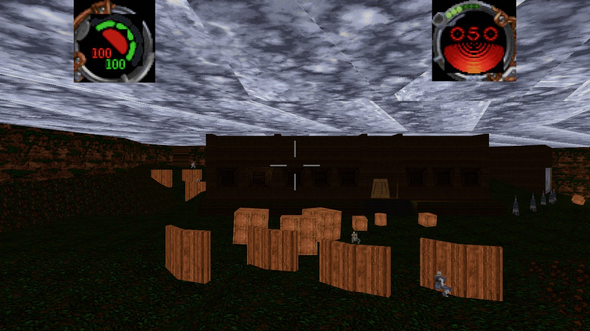
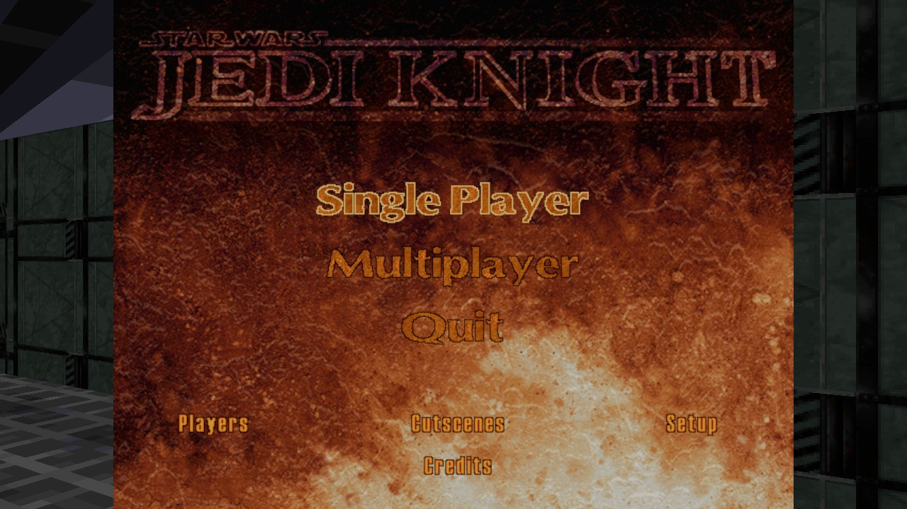
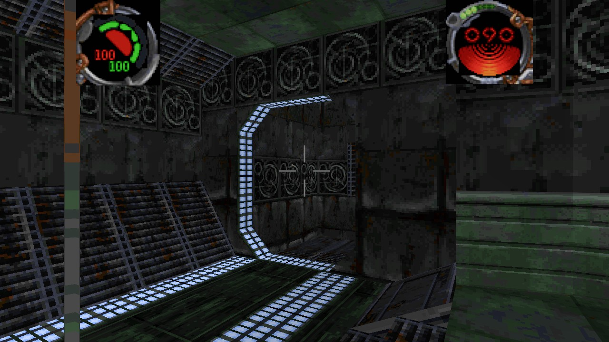
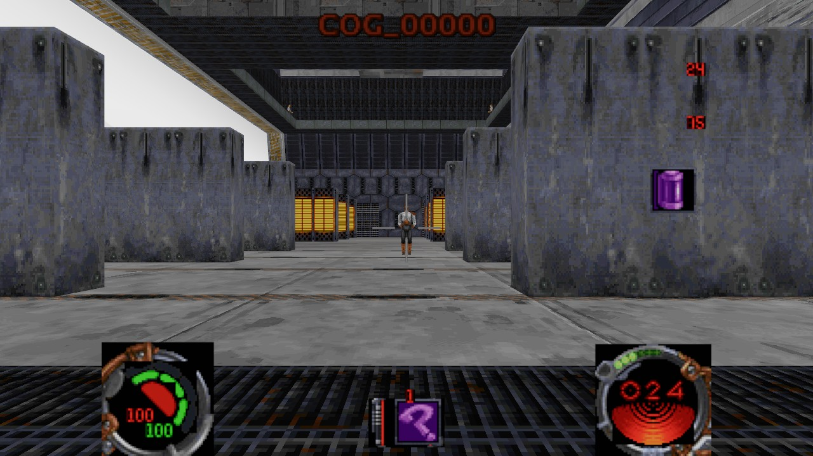
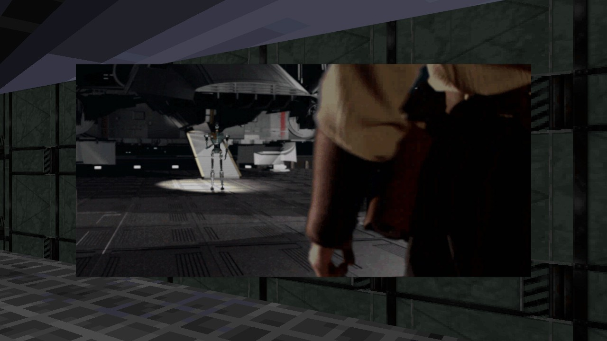

v0.1.1 · Windows x64 · single-player
Jedi Knight,
rebuilt in Rust.
A from-scratch replacement engine for Star Wars Jedi Knight: Dark Forces II. Point it at the GOG install you already own and it plays the real game — the shipped levels, menus, HUD, sounds and cutscenes — in a modern window.
GPL-3.0-or-later · no game data included · your retail install is never modified

jkl\03katarn.jkl, rendered from the retail data.Reads your install
The port parses the retail .gob archives and the tables inside JK.EXE. It never patches or redistributes the game.
Nothing to buy from us
The engine and every asset it draws come from the copy you already own. No game files are shipped, hosted or downloaded here.
Built on Bevy 0.20
Rust for the readers, the script VM, collision and game state; Bevy for the window, the renderer and the audio.
Status
The campaign runs. The edges are honest.
0.1.1 plays the light-side campaign from the opening film to the finale. A human has not yet played levels 2–21 end to end — the app itself completes all 21 as a check — and the dark-side ending is not built.
Working today
- All 28 campaign rows, both finales, films and level hand-off
- Menus, HUD, inventory, force-power screen from the game's own art
- Save slots, audio, cutscenes and music from the retail files
- Combat: weapons, damage, deaths, pickups, six force powers
- Doors, lifts, triggers and scripts running against the live world
- Health and shields now carry between levels
Still rough or missing
- No human playthrough of levels 2–21 yet
- Dark-side choice and ending screens
- Multiplayer
- AI instinct scheduler — actors see, chase and fire, but only
PrimaryFire - Several force powers and animation states unverified
- 29 of 768 cutscene palette bytes differ from the reference decoder
Screens
Every pixel comes from the retail data.
The levels, the menu art, the fonts, the strings, the HUD panels and the films are read from the install you point it at.




Install
Three steps, no admin rights.
Download the setup
Get bevi-knight-0.1.1-setup.exe from the latest release. It is unsigned, so Windows SmartScreen may ask: More info → Run anyway.
Point it at your game
The wizard finds your GOG install automatically. If it cannot, browse to the folder containing JK.EXE, paste the path, or drag the folder onto the window.
Play
Launch from the Start Menu and choose New Game. The installer is per-user, creates an uninstaller in Settings → Apps, and never touches the game folder.
What you need
- Windows 10 or 11, x64.
- A retail GOG install of Star Wars Jedi Knight: Dark Forces II: the folder must contain
JK.EXEand aResource\directory. - About 100 MB of disk space; no admin rights, no runtime to install.
The GOG build is what this is tested against. The Steam executable is DRM-wrapped and is not read by the port.
Build from source
One toolchain, two binaries.
Windows x64 and a Rust toolchain 1.97.1 or newer with the MSVC target. Cutscenes need a small 32-bit helper because the game's SMACKW32.DLL is 32-bit.
cargo build --release
rustup target add i686-pc-windows-msvc
cargo build --release --target i686-pc-windows-msvc \
--manifest-path tools/smkdec/Cargo.toml
# optional: build the Windows setup locally
powershell -ExecutionPolicy Bypass -File packaging\build-setup.ps1The 61 behaviour gates need the retail data; cargo test is the part that runs without it. CI builds, tests and packages on Windows with the pinned MSRV.
Under the hood
- Custom readers for
.gob,.jkl,.3do,.key,.pup,.bm,.sft,.cmp - COG script parser and interpreter — 540 scripts, 0 stubbed verbs
- Recovered collision, camera, HUD and menu tables from the engine executable
- 133 unit tests; 61 gates on a retail install
Documentation
The evidence is public.
0.1 release note
What 0.1 does, its caveats and the verified numbers.
Engineering notes
The unit-by-unit record, reverse engineering and camera recovery.
File formats
Every recovered format with its evidence and unknowns.
Gaps
Everything not ported yet, unit by unit.
Gate transcript
The 61 gates as they printed on the retail install.
Roadmap
The dependency-ordered remainder.
Your copy. Your engine.
Download the setup, point it at the GOG install on your disk, and tell us what breaks.